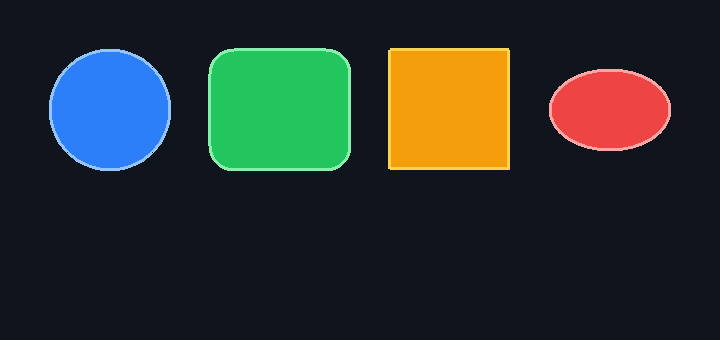

4.19 Shape（形状）
Shape 纯绘制控件：七种图元（rect/kShapeFilledRect/round-rect/kShapeCircle/ellipse/kShapePolyline/polygon，空心与环带），支持多图元组合（单控件拼合复杂图形）与背景色。无事件/无子控件。继承链：Shape → ControlImpl → Control。设计文档见 design/Shape_Design.md。

4.19.1 控件的创建
// C++
auto s = ShapeBuilder(nullptr, SRect(40, 40, 90, 90))
.setShape(ShapeType::Circle).setFillColor({59,130,246}).build();
// 多图元（组合图形）
s->addPrimitive(ShapeType::Polygon, SRect(0,0,150,52));
// C ABI
UIControlHandle s = UICornerstone_CreateShape(g_inst, 40, 40, 90, 90, 1, 1);
UICornerstone_ShapeAddPrimitive(g_inst, s, "circle", 10, 10, 40, 40);
// JSON
{ "type": "shape", "rect": [40, 40, 90, 90], "shape": "circle",
"fill": "#3B82F6", "stroke": "#1E293B", "line-width": 2 }4.19.2 控件的属性
| 属性/字段 | 属性常量 | 类型 | 默认值 | 说明 |
|---|---|---|---|---|
shape | kShape | Enum | kShapeRect | kShapeRect/kShapeFilledRect/kShapeRoundRect/kShapeCircle/kShapeEllipse/kShapePolyline/kShapePolygon |
fill | kFill | Color | 透明 | 填充色（透明=空心） |
stroke | kStroke | Color | 黑 | 描边色 |
line-width | kLineWidthProp | Float | 1 | 描边宽（0=无） |
radius | kRadius | Float | 0 | 圆角半径（round-rect） |
ring-width | kRingWidth | Float | 0 | 环带宽（circle/ellipse） |
background | kBackground | Color | 透明 | 通用背景属性（设后取消透明） |
clip | kClipShape | Bool | true | 图元绘制裁剪到控件 rect（CR20261117001）；false 保留旧溢出行为 |
4.19.3 控件的回调 / 事件
| 事件名 | 事件常量 | 触发时机 | 参数 |
|---|---|---|---|
| — | — | 纯绘制控件，无事件 | — |
缩放：绘制/命中均随 xScale/yScale 等比（2.0x 对照已验收）；空心圆描边闭合；凹多边形耳切三角化。mapToDrawPoint 提供本地→绘制坐标映射。
4.19.4 JSON 语法
{
"type": "shape", "id": "house", "rect": { "x": 40, "y": 300, "w": 150, "h": 130 },
"colors": { "background": "#324057FF" },
"primitives": [
{ "shape": "round-rect", "rect": [10, 50, 130, 75], "radius": 6, "fill": "#34D399" },
{ "shape": "polygon", "fill": "#EF4444",
"points": [ {"x":0,"y":52}, {"x":75,"y":0}, {"x":150,"y":52} ] },
{ "shape": "circle", "rect": [28, 68, 30, 30], "fill": "#3B82F6" }
]
}| JSON 键 | 类型 | 说明 |
|---|---|---|
points | [{x,y}] | 折线/多边形顶点（本地坐标）；经 ShapeSetPoints / setPoints 读写（非属性系统键） |
primitives | Array | 多图元组合（非空替代单图元） |
4.19.5 C++ Binding 样例
auto s = ui->CreateShape(40, 300, 150, 130);
s.SetEnum(PropertyNames::kShape, "round-rect");
s.SetColor(PropertyNames::kFill, SColor(52, 211, 153));
s.SetFloat(PropertyNames::kLineWidthProp, 2.0f);4.19.6 C ABI 调用样例
UIControlHandle s = UICornerstone_CreateShape(g_inst, 40, 300, 150, 130, 1.0f, 1.0f);
UICornerstone_SetEnum(g_inst, s, "shape", "circle");
UICornerstone_SetColor(g_inst, s, "fill", (UIColor){59, 130, 246, 255});
int p = UICornerstone_ShapeAddPrimitive(g_inst, s, "round-rect", 0, 0, 120, 90);
UICornerstone_ShapeSetPrimitiveFloat(g_inst, s, p, "radius", 10.0f);